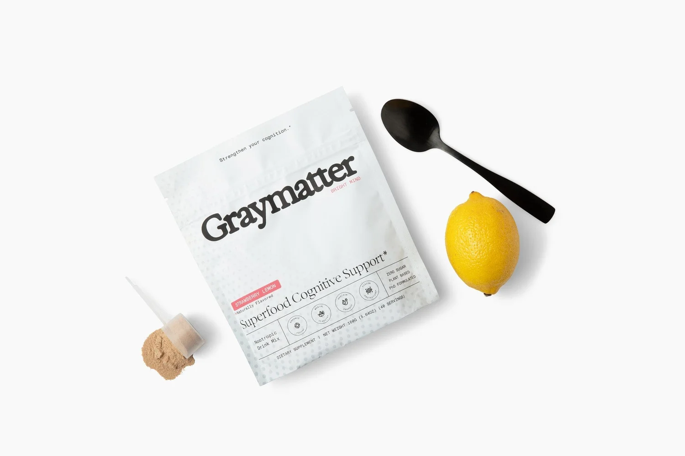
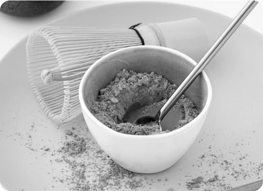
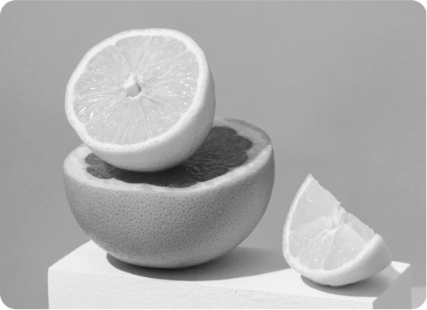
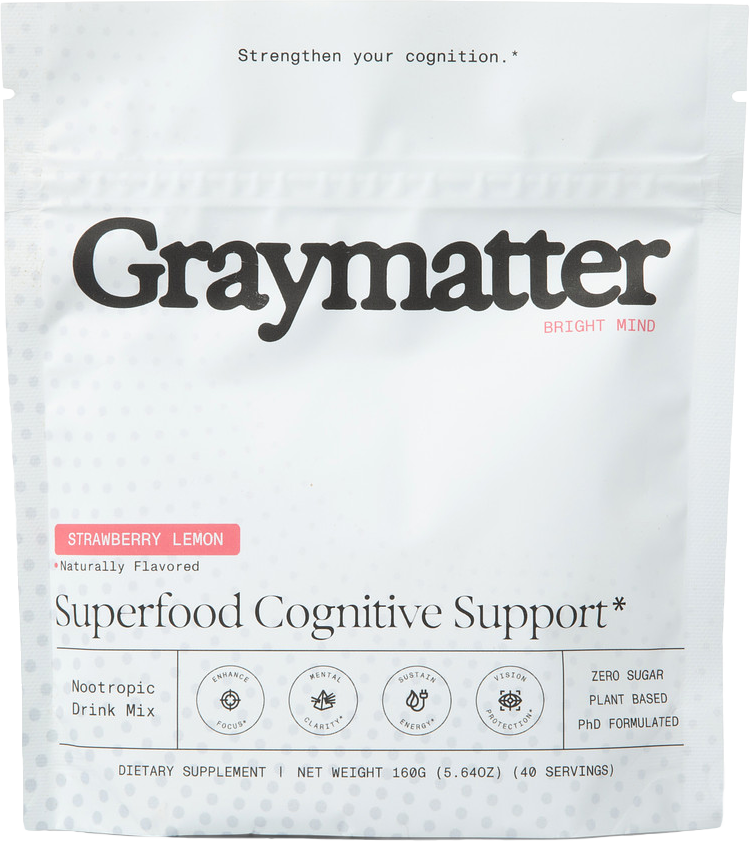
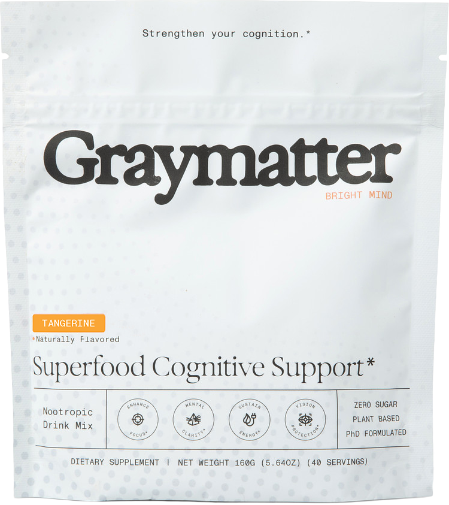
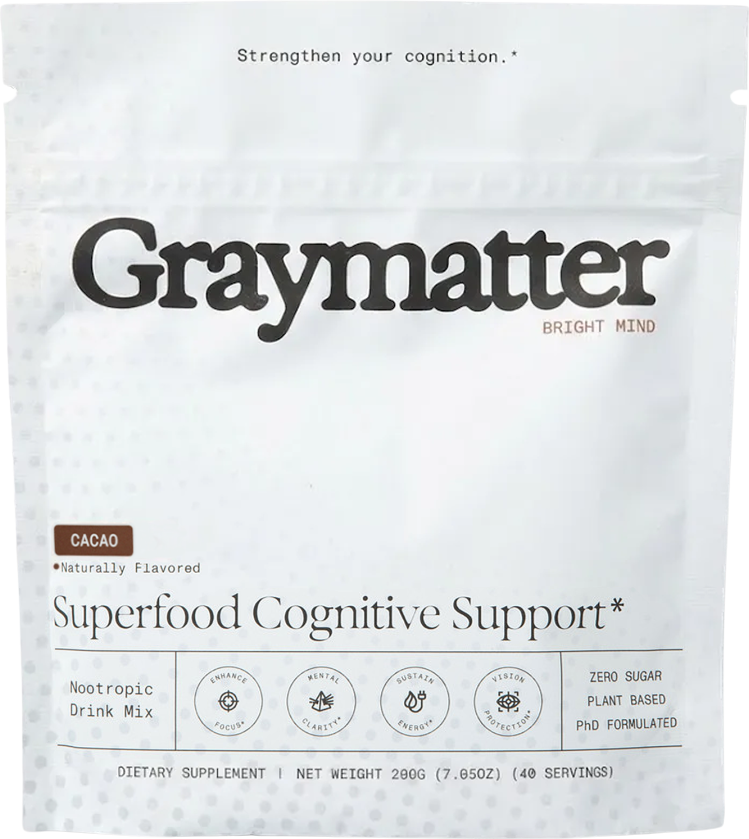
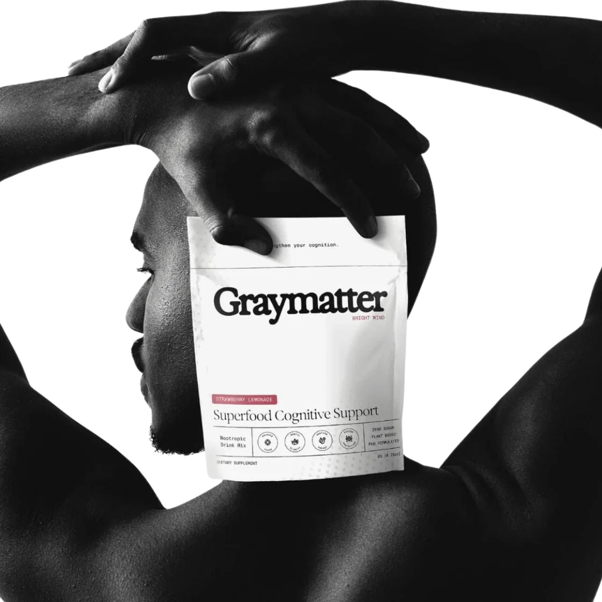

01 / Focus
A little more clarity.*
Nootropics to support cognitive function and help you stay focused.*
Inside the blend
Nitrosigine®, L-Tyrosine, Alpha GPC, and Huperzine A are among the nootropics in Graymatter Bright Mind.
Graymatter × Rayshawn Jenkins
For the work. For the moment.
For everything you bring to it.
A ritual for the everyday
Busy days ask a lot of you. Your mind deserves a place in your daily routine, too.
Graymatter is a plant-based drink mix with nootropics and adaptogens to support focus, mental clarity, and energy.*
Get to know the formula
Beyond game day
Football puts preparation on display. The film. The repetition. The work before anyone is watching.
With Rayshawn Jenkins, we’re putting the mind into that conversation.
Nature, with intention
Nootropics. Adaptogens. Plant-based energy.
A considered formula for focus, clarity, and balance.*
Nootropics to support cognitive function and help you stay focused.*
Nitrosigine®, L-Tyrosine, Alpha GPC, and Huperzine A are among the nootropics in Graymatter Bright Mind.

02 / EnergyPlant-based ingredients to support your mental energy through demanding days.*
Matcha, green tea, guarana, and maca root are part of the Graymatter formula. This product contains caffeine.

03 / BalanceAdaptogens to support a healthy stress response and mental balance.*
Ashwagandha, rhodiola, and red panax ginseng are among the adaptogens in Graymatter Bright Mind.
Make it yours
Find the Graymatter Bright Mind
you’ll look forward to.
Bright. Fruity. Refreshing.

A little sunshine in your routine.

Rich flavor. A familiar ritual.


The thinking behind the formula
Created with a PhD molecular biologist, Graymatter brings nootropics and adaptogens together in one drinkable mix.
Each part of the formula has a role. Explore the ingredients and the research behind them.
Third-party testing and manufacturing that follows current Good Manufacturing Practices.
A drink mix that fits into your day. Follow the preparation and serving guidance on your product label.
Graymatter × Rayshawn Jenkins